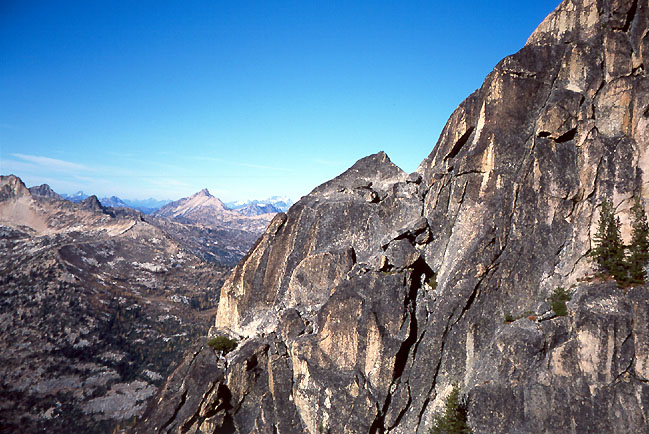
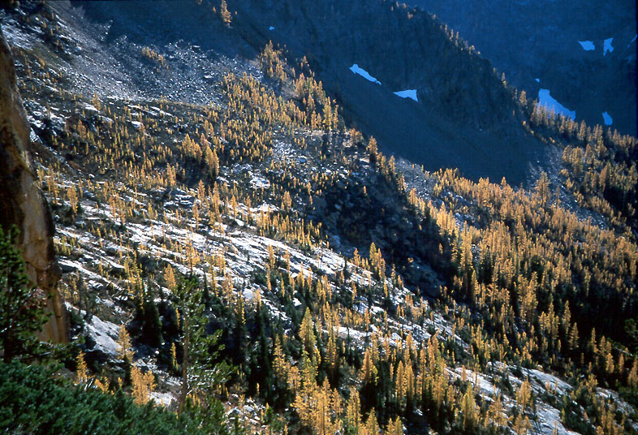
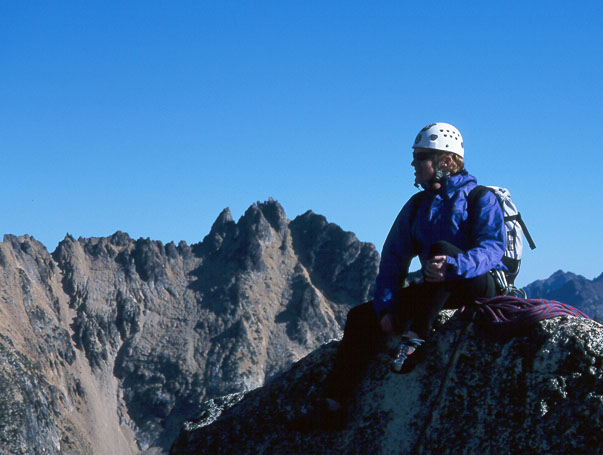
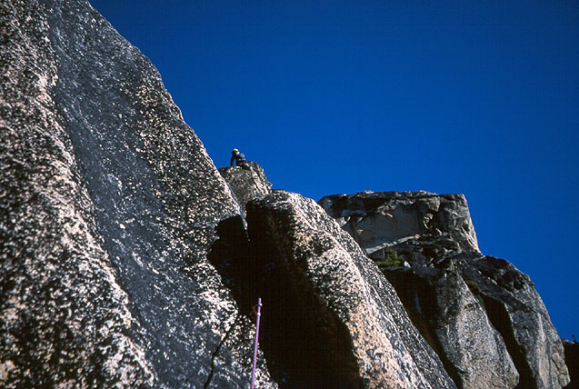
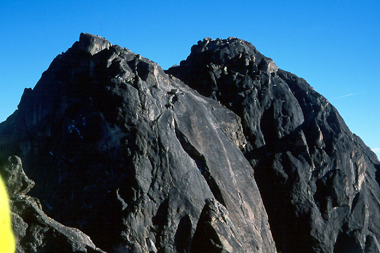
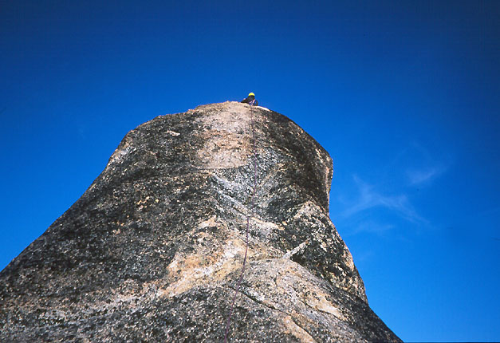
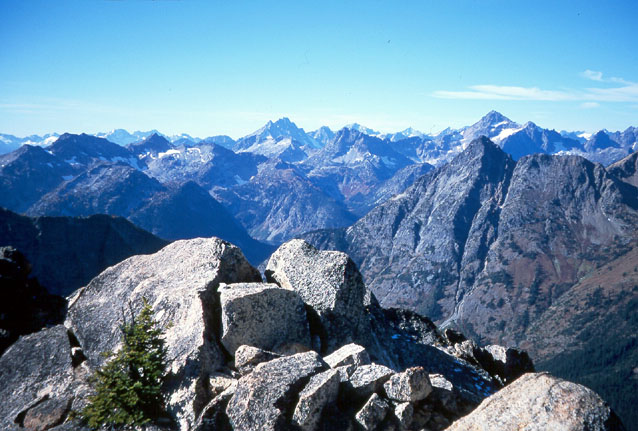

Washington Pass climbing
South Early Winter’s Spire and Concord Tower
- Southwest Rib (5.8) and the Cave Route (5.7+)
- September, 2002
Chris and I were keen for some rock climbing at Washington Pass. Dan and Aidan were coming too, but realized it would be a long day from Tacoma and didn’t want to get back too late. So they went for a day at Index while we left early in the morning, arriving at the hairpin turn below the spires. Immediate full-body shivering convinced us to abandon a more ambitious objective for something smaller and hopefully sunnier!







So we parked at the Blue Lake trailhead, and headed up first on trail, then into the forest for the basin below South Early Winter’s Spire. We decided to climb the Southwest Buttress (also called the Southwest Rib). It was rated 5.8, and is about 8 pitches long. We changed to rock shoes at a little platform with a tree, then Chris took the first long lead. I reached his stance after following cracks and chimneys to a tree. From here, I took a very short 4th class lead (20 feet) to the base of the obvious very nice looking 5.8 crack. I was a little miffed when Chris claimed this lead for himself (“It’s my turn,” he said with a grin). Oh well, I guess he was getting cold at his tree belay and wanted to keep going. Chris reached a belay, and I followed. But the rope got stuck on a chock-stone, so I had to self-belay myself with a Muenter hitch. The pack and all the rope fiddling made this crack pretty awkward. I cursed my way up to the chock-stone where I freed the rope to get an active belay again.
My lead was again about 20 feet long, a 5.2 corner crack. Chris came up and sympathized with my complaint that the odd pitches are stellar, and the even pitches are mere connectives. He offered me the next pitch, but I declined, somewhat mad at myself for caring so much. I must be getting old and cranky. Anyway, we both thought this was probably the most spectacular pitch of the route. It went around a corner then up increasingly slabby terrain to some exposed moves that gain a belay platform. I continued from there, climbing the twin off-width cracks called the “bear hug.” I was able to put two large pieces in at the base of the cracks, but nothing above. That’s fine, it’s pretty easy to just power up to the top of the cracks. From there, nice scrambling got me to a belay directly above Chris. It was nice to be in the sun, which was only now starting to have a warming effect. Traces of fresh snow were laying on the shaded ledges.
Chris led a long pitch, mostly easy but he spiced it up with some nice variations. Then I led to the summit. Some people rappel into a dirt gully and climb back up the other side. It is much more pleasing to traverse the “rabbit ears” and come out right at the notch. Don’t walk in the dirt good people! The final short “5.2” hand crack was nice.
So we enjoyed the summit for a while, once again (like a few weekends before on Cutthroat) really happy with the view. Chris had me take some pictures of him with his camera that came out terribly. We hiked down the Arete. I was amazed at how different it seemed from my previous visit, in June 1999. At that time, the Arete was a thrilling and dangerous alpine climb! Now merely a pleasant scramble. Still, we prudently made two single-rope rappels at the bottom.
What next? The Beckey Route was getting sun, which had strong appeal for us both. But I really wanted to climb something new. Chris suggested the Cave Route on Concord Tower. He had climbed it a few months ago, but vaguely knew of a variation above the Cave that would be more challenging. So we hiked up the gully to the base of the route. Of course, we were on the shady side, so it was back to blowing on fingers to keep warm! I led the first pitch, stopping now and then to do this. At the crux, I fretted a little bit because there was a difficult move followed by what appeared to be a corner with no gear possibilities. But after I committed to the move and got up there, I found a nice hand jam. I found a nice piece of gear on this pitch too! (If you can describe it, I will return it to you :-)) Chris led an interesting pitch traversing back around a corner to the cave. Meanwhile, some guys descended from the Beckey Route and got their rope stuck. They waited patiently for another party to come down and help.
From the Cave, Chris suggested climbing straight up from the mouth, or somewhere off to the left. Straight up looked protectable, so I did this. Chris thought it would be 5.9, so it felt serious! But I found it getting easier and easier, and reached the summit pretty sure that it was 5.6 or 5.7. Chris came up and said 5.6. Concord Tower has a really nice pointy summit, with a great vertical view down to the highway. We made 4 single-rope rappels to reach the notch between Concord Tower and Liberty Bell. Hiking down the trail, we paused for a while in the last of the larch tree and boulder terrain. I “drank deeply” of the countryside, then we hiked quickly to the car.
So these are a couple of routes that good folk may enjoy.